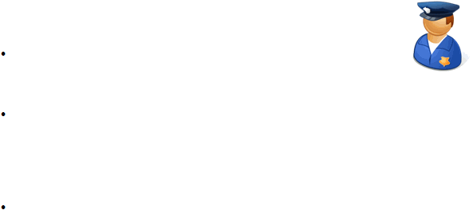

|

Page 100
Enforcing Violators
The way violators of company policy are dealt with differs from company to
company. The following, however, are some ways you can handle violations in your
company:
Supervision. Instead of punishing a violator, you provide coaching and
modeling of acceptable behavior. Supervision is the best resort when the
violation is mostly due to ignorance of policies or lack of skills training.
Implementation of Pre-determined Consequence. If investigation has proven that a complaint
does have merit, it’s important to implement the pre-determined consequence to a particular
behavior. It is in the consistency of the implementation of consequences, as well as in the swift
delivery of the consequences once judgment is made, that a rule gains credibility and therefore
becomes effecting in managing behavior.
Systemic Change. If the incident reveals problems in procedures, communication, power
hierarchies, and other systemic factors, then the incident must be taken as opportunity to
improve the system.
|